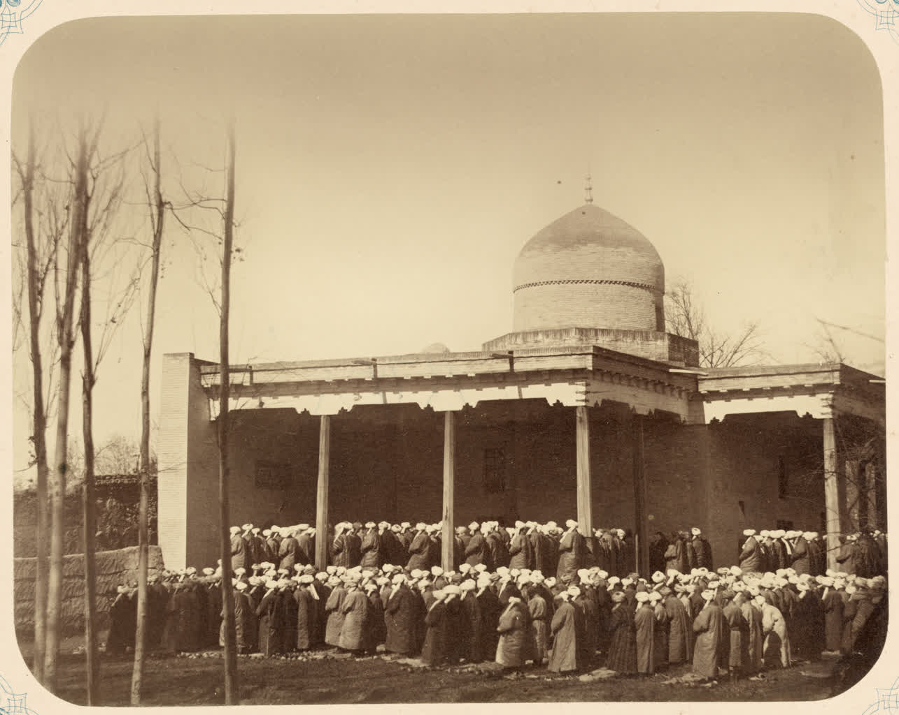

Ramazon va Qurbon hayitlari qanday nishonlanadi: hayit namozi, takbir va fitr sadaqasi
Islomdagi ikki bayram — Ramazon hayiti va Qurbon hayiti qachon keladi, hayit namozi qanday o‘qiladi, takbir va fitr sadaqasi nima — faktlarga asoslangan ma’lumotnoma. (Mazhablar o‘rtasidagi farqlar betaraf ko‘rsatilgan; O‘zbekiston asosan hanafiy mazhabida.)

Islomda ikki asosiy bayram — hayit bor: Ramazon hayiti (arabcha Iyd al-Fitr) va Qurbon hayiti (Iyd al-Adho). Ikkalasi ham qamariy (hijriy) taqvimga bog‘langan va jamoat bo‘lib o‘qiladigan maxsus bayram namozi — hayit namozi bilan nishonlanadi. Ushbu ma’lumotnoma har ikki bayramning vaqti, hayit namozi, takbir va fitr sadaqasini faktlar asosida tushuntiradi. Ayrim masalalarda sunniy mazhablar o‘rtasida farq bor; ular betaraf ko‘rsatiladi va O‘zbekistonda keng tarqalgan hanafiy mazhabidagi hukm alohida qayd etiladi.
Ramazon hayiti (Iyd al-Fitr)
Ramazon hayiti qamariy taqvimning o‘ninchi oyi — Shavvolning 1-kunida, ro‘za oyi Ramazon tugagach keladi. Arabcha nomidagi “fitr” — ro‘zani ochish, ya’ni bir oylik tong-kechgacha tutilgan ro‘zaning yakuni ma’nosini bildiradi (Manba: Britannica). Ramazon 29 yoki 30 kun davom etadi; Shavvol oyi hilol (yangi oy) ko‘ringanidan so‘ng hayit boshlanadi.
Qurbon hayiti (Iyd al-Adho)
Qurbon hayiti qamariy taqvimning oxirgi oyi — Zulhijjaning 10-kunida, Haj mavsumida keladi. Bu bayram Ibrohim payg‘ambarning Alloh amriga bo‘ysunib o‘g‘lini qurbonlik qilishga tayyor bo‘lgani va shu paytda Alloh unga qo‘chqor ato etgani xotirasiga bog‘liq (Manba: Islamic Relief; Britannica). Bayram tashriq kunlari deb ataluvchi 11–13 Zulhijja kunlariga ham cho‘ziladi. U Haj ibodati bilan bevosita bog‘liq va qurbonlik (udhiya/qurbon) — izn etilgan hayvonni (qo‘y, echki, mol yoki tuya) so‘yish bilan nishonlanadi; go‘sht an’anaga ko‘ra uch qismga — oila, qarindosh-do‘st va kambag‘allarga bo‘lib beriladi. Qurbonlik vaqti hayit namozidan keyin boshlanib, 13-kungacha davom etadi (Manba: Islamic Relief; Muslim Aid).

Hayit namozi qanday o‘qiladi
Hayit namozi ertalab, quyosh chiqqach va peshingacha bo‘lgan vaqtda jamoat bo‘lib o‘qiladi. U ikki rakatdan iborat bo‘lib, odatiy namozdan farqli ravishda qo‘shimcha takbirlar aytiladi (takbirlar soni mazhabga qarab biroz farq qiladi); undan oldin azon va iqomat aytilmaydi. Juma namozidan farqli o‘laroq, xutba namozdan keyin o‘qiladi (Manba: Islamic encyclopaedic sources). Namoz ko‘pincha katta ochiq maydon — hayitgoh yoki namozgohda, shuningdek masjidlarda ado etiladi. Hukmi mazhablarga ko‘ra farqlanadi: hanafiy va hanbaliy mazhablarida hayit namozi vojib, molikiy va shofe’iy mazhablarida esa ta’kidlangan sunnat (sunnati muakkada) sanaladi. O‘zbekiston asosan hanafiy mazhabida bo‘lgani uchun bu yerda vojib hukmi amal qiladi.
Takbir
Hayit kunlarida takbir aytish — bayramning muhim qismi. Takbir matni: “Allohu akbar, Allohu akbar, la ilaha illalloh, vallohu akbar, Allohu akbar va lillahil hamd” (“Alloh buyukdir, Alloh buyukdir; Allohdan o‘zga iloh yo‘q; Alloh buyukdir, Alloh buyukdir va hamd Allohga xosdir”). Ramazon hayitida takbir bayram kechasidan (Shavvol hiloli ko‘ringanidan) boshlab va namozgohga borish yo‘lida aytiladi. Qurbon hayitida esa “takbiri tashriq” — Arafa kuni (9 Zulhijja)ning bomdod namozidan boshlab tashriq kunlarining oxirigacha (13-kun asr namozigacha) har farz namozdan so‘ng aytiladi; hanafiy mazhabida bu vojib hisoblanadi (Manba: islomiy manbalar).
Fitr sadaqasi (Zakot al-Fitr)
Fitr sadaqasi — Ramazon hayiti namozidan oldin berilishi lozim bo‘lgan vojib sadaqa. Agar namozdan keyin berilsa, u oddiy ixtiyoriy sadaqa hisoblanadi; shuning uchun ulamolar uni bir-ikki kun oldinroq, kambag‘alga hayitga ulgurib yetishi uchun berishni tavsiya qiladi. Miqdori — har bir kishi uchun bir so‘ (taxminan 2,5–3 kg) asosiy oziq-ovqat (bug‘doy, arpa, xurmo, guruch va shu kabilar) yoki uning pul ko‘rinishidagi qiymati; naqd pul bilan berish hanafiy mazhabida joizdir (ba’zi mazhablar oziq-ovqat ko‘rinishini afzal ko‘radi). Maqsadi — ro‘zadagi nuqsonlarni poklash va kambag‘allarni ham bayramdan bahramand qilish. Uni oila boshlig‘i o‘ziga qaram shaxslar (jumladan bolalar) nomidan ham ado etadi (Manba: islomiy huquq manbalari).
Urf-odatlar
Hayit odoblariga quyidagilar kiradi: namozdan oldin g‘usl qilish va eng yaxshi yoki yangi kiyimni kiyish; Ramazon hayitida namozdan OLDIN bir oz shirinlik — an’anaga ko‘ra toq sonli xurmo yeyish (ro‘za tugaganini bildirib, zero hayit kuni ro‘za tutish man etilgan); Qurbon hayitida esa namozdan oldin yemaslik, namozdan so‘ng qurbonlik go‘shtidan totinish sunnat sanaladi. Bayramda “Iyd muborak” va “Taqabbalallohu minna va minkum” (“Alloh biz va sizdan qabul qilsin”) deb tabriklanadi; qarindosh-urug‘ni ziyorat qilish, bolalarga sovg‘a berish va xayr-ehson qilinadi. Qabristonni ziyorat qilish ham ko‘p joylarda uchraydigan xalq odati; ammo ko‘plab ulamolar buni aynan hayitga xos farz emas, balki umumiy ruxsat etilgan amal sifatida qaraydi — shuning uchun u diniy farz emas, madaniy an’ana sifatida keltiriladi (Manba: islomiy manbalar). O‘zbekistonda har ikki bayram — Ramazon hayit va Qurbon hayit rasmiy dam olish kunlari hisoblanadi (Qurbon hayit 1991-yildan, Ramazon hayit 1992-yildan davlat bayrami; Manba: O‘zbekiston nodavlat/davlat bayramlari ro‘yxati).
Nega sanalar har yili suriladi
Islomiy (hijriy) taqvim sof qamariy bo‘lib, taxminan 354 kundan iborat — ya’ni milodiy (quyosh) yilidan qariyb 10–11 kun qisqa. Shu sababli har ikki hayit ham har yili milodiy taqvimda taxminan 10–11 kun oldinga suriladi va taxminan 33 yil ichida barcha fasllarni aylanib chiqadi (Manba: islomiy taqvim manbalari).